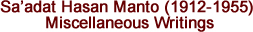

CONSIDER MAKING A GIFT
Dear Readers and Friends of The Annual of Urdu Studies,
Regrettably, despite all efforts, no stable source of funding has been found and, as we go to press, the Annual does not have enough money on hand to continue for another full year. The organizations which provided major subsidies in the past, such as the American Institute of Pakistan Studies (AIPS), have had to deal with significant reductions in their own funding and are unable to provide enough to sustain continued publication.
It is now entirely up to our readers and friends whether we will be able to publish a volume in 2014. It is thanks in large part to the generosity and sacrifice of those friends and readers, acknowledged elsewhere in this issue, that we have been able to publish the Annual this year. Unfortunately, unless adequate donations are received within the next few months, this may have to be the last volume.
Please take a moment now to consider whether you are able to help this journal—the only one of its kind in the West—to continue serving the scholarly world and the Urdu community.
Please send a contribution in any amount payable to:
University of Wisconsin Foundation with
Annual of Urdu Studies / 12546746 in the memo line.
Mail directly to:
UW Foundation
U.S. Bank Lockbox
P.O. Box 78807
Milwaukee, WI 53278-0807
[PLEASE NOTE: Any check sent directly to The Annual of Urdu Studies must be clearly marked as a GIFT and be separate from subscription payments.]
Or you may make an ONLINE CONTRIBUTION at:
www.uwfoundation.wisc.edu/giving
(your computer's internet browser must have "cookies" turned on).
Select "Other" from the designation drop-down menu and type "Annual of Urdu Studies / 12546746" in the free text box.
CONTRIBUTIONS ARE TAX DEDUCTIBLE IN THE U.S.
|
ACKNOWLEDGMENTS
The AUS would like to thank the following individuals and institutions for their generous contributions for this issue:
|
S. Kamal Abdali
Mohammad V. Abidi
Amer Akmal
American Institute of Pakistan Studies
Anonymous
Nusrat Anwar
Ian Bedford
Naeem & Nuzhat Chawala
M. Salim Chowdhery
David Gilmartin
Global Medical Services
Nasir Mahmood Gondal
Hiroshi Hagita
Itrat Husain
Harkabir Jandu
Ghazala A. Kazi
Khursheed A. Mallick
Muhammad Umar Memon
Anil Menon
Raza Mir
Tahira Naqvi
Steven Poulos
Frances Pritchett
M. Basit & Mubashira Qari
Humaira Rahman
Iqbal Ratnani
Asif Raza
Iqbal Sabuhi
Yasmin Saikia & Charles Haines
Abdul Wahab Khan Salim
Moazzam Siddiqi
Salman Siddiqui
Brian Silver
Asif Ali Syed
Saeed A. Syed
University of Wisconsin-Middle East Studies Program
|
All
the articles of the Internet edition of the Annual of Urdu Studies (AUS)
are available in the PDF format. Individuals may view and download them
for personal use with the Adobe Acrobat Reader.
Click
here to download FREE Adobe Acrobat Reader 

An Extraordinary Translator: Tirath Ram Firozepuri (1885-1954) (with corrections made 28 Aug 2013) (original version from printed edition) (Photo)
C.M. Naim
The Fictional "Fallout" from Fort William?
Alison Safadi
Some Comments on de Tassy's Les Auteurs Hindoustanis et Leurs Ouvrages d'Apres les Biographies Originales
S. Kamal Abdali
The Authors of Hindoustani and Their Works
Garcin de Tassy (Translated by S. Kamal Abdali)
Origin and Diffusion of Hindoustani
Garcin de Tassy (Translated by S. Kamal Abdali)
Premchand and Language: On Translation, Cultural Nationalism, and Irony
Snehal Shingavi
Translation as New Aesthetic: Premchand's Translation of Shab-e Taar and European Modernism
Madhu Singh
Premchand in the German Language: Paratexts and Translations
Christina Oesterheld
Politics of Language and Cultural Representation: Premchand's "Shatranj ke Khilari" in Translation
Fatima Rizvi

The Politics of Enchantment: Remapping the Precapital in Faiz Ahmad Faiz's Postcolonial Poetry
Taimoor Shahid

The Stone with Sacred Names
Naiyer Masud / Tr. by Jane Shum & M.U. Memon
Occult Museum
Naiyer Masud / Tr. by Jane Shum & M.U. Memon
Humiliation
Saadat Hasan Manto / Tr. by Mushtaq-ur-Rasool Bilal
Photographer
Qurratulain Hyder / Tr. by Syed Sarwar Hussain
A Solitary Stem
Saeed A. Naqvi Syed / Tr. by the author

Six Poems (from Festivals of Solitude)
Asif Raza / Tr. by the poet
Yours and Mine
Faiz Ahmad Faiz / Tr. by Dur E. Aziz Amna

Upper, Lower, Middle
Saadat Hasan Manto / Tr. by M.U. Memon
Turnips
Saadat Hasan Manto / Tr. by M.U. Memon
Green Sandals
Saadat Hasan Manto / Tr. by M.U. Memon
The Gold Ring
Saadat Hasan Manto / Tr. by M.U. Memon
Ismat-Faroshi (Prostitution)
Saadat Hasan Manto / Tr. by M.U. Memon
Why Do People Get Drunk?
Saadat Hasan Manto / Tr. by M.U. Memon
Short Story Writer and Matters of Sex
Saadat Hasan Manto / Tr. by M.U. Memon
I Too Have Something to Say
Saadat Hasan Manto / Tr. by M.U. Memon
Afterword
Saadat Hasan Manto / Tr. by M.U. Memon
Foreword
Saadat Hasan Manto / Tr. by M.U. Memon
How I Write Stories
Saadat Hasan Manto / Tr. by M.U. Memon
The Fifth Trial
Saadat Hasan Manto / Tr. by M.U. Memon
Manto and I
Mehdi Ali Siddiqi / Tr. by M.U. Memon
Marginotions
Muhammad Hasan Askari / Tr. by M.U. Memon

Mumbai se Pishavar Tak, Manzil ba Manzil Hamdostan (Ek Usmani Safir Ahmad Hamdi Shervani ki Zabani)
Halil Toker
Urdu ke Rasmu'l-Khat ka Mas'ala
Kamal Abdali
Qiranu's-Sa'dain men Ghalib ka Tazkira
Chaudhri Muhammad Naim
[Nazmen]
Asif Raza
Aj ki Meri Du'a
Satyapal Anand
Ghazlen
Humaira Rahman
Ghazlen
Muqsit Nadim
Ghazal
Shaukat Fahmi
The Annual of Urdu Studies is supported by the generous donations of our readers and friends.
©
2013 Department of Languages and Cultures of Asia,
University of Wisconsin—Madison |